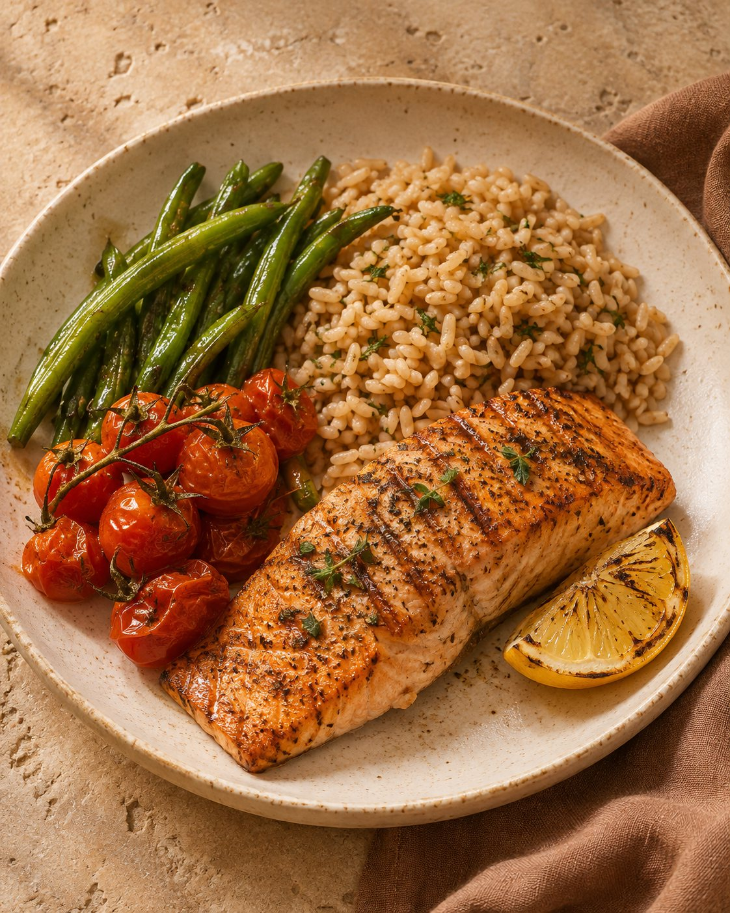
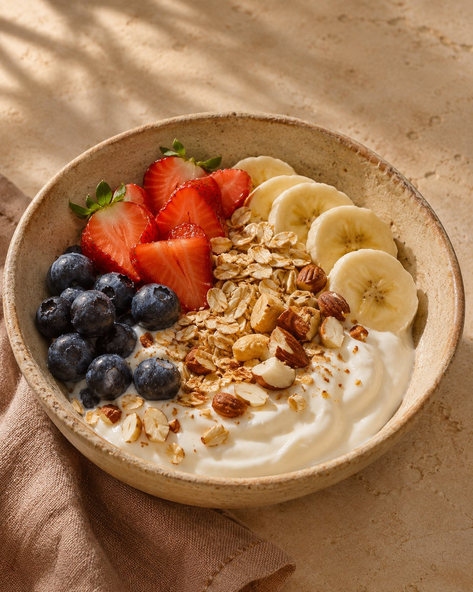

Tratamento nutricional em patologias
Orientação alimentar que considera seu diagnóstico e suas necessidades nutricionais.
Acompanhamento nutricional que leva em conta sua saúde, suas preferências e os desafios do seu dia a dia.
Conheça as opções de atendimento, do cuidado nutricional em condições de saúde à construção de novos hábitos alimentares.
Orientação alimentar que considera seu diagnóstico e suas necessidades nutricionais.
Consultas para tirar dúvidas, acompanhar seu progresso e ajustar as orientações ao longo do tempo.
Estratégias práticas para fazer escolhas e criar hábitos alimentares que você consiga manter.
Acompanhamento para quem deseja perder peso, com metas ajustadas à sua saúde e à sua rotina.
Planejamento das refeições de acordo com suas preferências, seus horários e seus objetivos.
Atendimento nutricional à distância, com agendamento pelo WhatsApp.
Sou nutricionista clínica e ofereço um atendimento individualizado, pautado na escuta, no acolhimento e no respeito às suas necessidades. Durante a consulta, buscamos compreender seus hábitos alimentares, seu histórico de saúde e seus objetivos, para que possamos construir, juntos, orientações nutricionais que se adaptem à sua rotina e promovam saúde, equilíbrio e bem-estar.
Nutricionista clínica CRN 24102943
Arroz, feijão, legumes e outras comidas da mesa brasileira podem fazer parte de uma alimentação equilibrada. A ideia é montar refeições que caibam na sua rotina, respeitem seus gostos e dispensem cortes desnecessários.



Envie uma mensagem para tirar dúvidas, saber os horários disponíveis e agendar sua consulta.